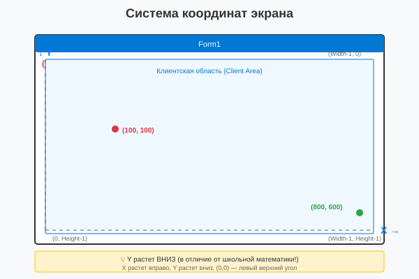
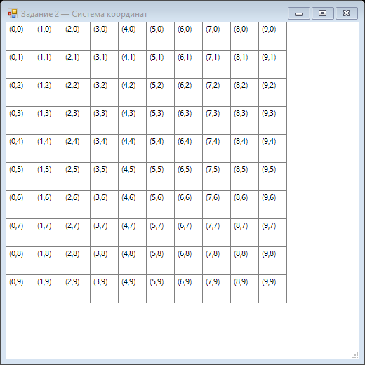

Урок 2.2: Объект Graphics и система координат
📌 Ключевые моменты этого урока:
- Graphics — это главный объект для всего рисования в GDI+
- Получить Graphics можно тремя способами: из Paint события, CreateGraphics() или FromImage()
- Windows Forms использует стандартную систему координат: (0,0) в левом верхнем углу
- X растет вправо, Y растет вниз
- Graphics поддерживает разные единицы измерения (пиксели, дюймы, миллиметры)
- Трансформации (сдвиг, поворот, масштабирование) изменяют систему координат
Работа с Graphics в Visual Studio
Graphics — это основной объект GDI+ для рисования. В Visual Studio вы будете работать с Graphics через обработчик события Paint. Давайте рассмотрим, как это сделать пошагово.
Шаг 1: Добавление обработчика события Paint
Способ 1: Через Дизайнер форм
1. Откройте Дизайнер форм (Shift+F7)
2. Выделите форму (кликните по ней)
3. Откройте окно Properties (F4)
4. Перейдите на вкладку Events (значок ⚡)
5. Найдите событие Paint
6. Дважды кликните по пустому полю справа
Способ 2: Через код
1. Перейдите к коду формы (F7)
2. В конструкторе добавьте:
this.Paint += Form1_Paint;
3. Нажмите Tab дважды — Visual Studio создаст обработчикШаг 2: Использование IntelliSense с Graphics
В обработчике Paint:
private void Form1_Paint(object sender, PaintEventArgs e)
{
// Напишите "g." и увидите список методов
Graphics g = e.Graphics;
g. ← Нажмите точку, появится список:
┌──────────────────────────────────┐
│ Graphics │
│ ▼ │
│ • Clear(...) │
│ • CopyFromScreen(...) │
│ • DrawArc(...) │
│ • DrawBezier(...) │
│ • DrawEllipse(...) │
│ • DrawImage(...) │
│ • DrawLine(...) │
│ • DrawLines(...) │
│ • DrawPath(...) │
│ • DrawRectangle(...) │
│ • FillEllipse(...) │
│ • FillRectangle(...) │
│ • ... │
└──────────────────────────────────┘
Начните вводить "Draw" — список отфильтруется
Используйте стрелки ↑↓ для выбора, Enter — для вставки
}Шаг 3: Быстрое рисование для отладки
Для быстрого тестирования можно использовать CreateGraphics():
1. На форме добавьте кнопку
2. Дважды кликните по кнопке — создастся обработчик Click
3. Добавьте код:
private void button1_Click(object sender, EventArgs e)
{
using (Graphics g = this.CreateGraphics())
{
g.Clear(Color.White);
g.DrawRectangle(Pens.Red, 50, 50, 100, 100);
g.FillEllipse(Brushes.Blue, 150, 150, 80, 80);
}
}
4. Запустите приложение (F5)
5. Нажмите кнопку — рисунок появится сразу
Внимание! Это рисование будет стерто при перерисовке формы.
Для постоянного рисования используйте событие Paint.Graphics — главный класс для рисования
Graphics — это основной объект GDI+ для рисования. Он представляет собственно поверхность рисования (экран, Bitmap, принтер и т.д.) и предоставляет все методы для рисования линий, фигур, текста и изображений.
Почему Graphics так важен?
Все операции рисования всегда выполняются через Graphics объект. Нельзя нарисовать ничего "просто так" — нужно иметь Graphics, который привязан к определенной поверхности рисования.
Способы получения объекта Graphics
1️⃣ Из события Paint (РЕКОМЕНДУЕТСЯ):
Это самый правильный способ. Paint событие возникает когда форма нужно перерисовать.
private void Form1_Paint(object sender, PaintEventArgs e)
{
// Graphics g уже готов - привязан к форме
Graphics g = e.Graphics;
// Рисуем
g.DrawLine(Pens.Black, 10, 10, 100, 100);
g.FillEllipse(Brushes.Red, 50, 50, 100, 100);
}
// Важно! Если нужно переркисовать, вызовите:
Invalidate(); // Это запустит Paint событиеПреимущества: Graphics автоматически создается и уничтожается, нет утечек памяти, работает на любых поверхностях.
2️⃣ Создание через CreateGraphics() (БЫСТРО, НО ОСТОРОЖНО):
Создает Graphics непосредственно для рисования на форме. Используется для немедленного рисования без ожидания Paint события.
// Рисование немедленно (без Paint события)
Graphics g = this.CreateGraphics();
g.DrawLine(Pens.Blue, 10, 10, 200, 200);
g.Dispose(); // ОЧЕНЬ ВАЖНО! Освобождаем ресурсы
// Правильный пример с using:
using (Graphics g = this.CreateGraphics())
{
// Рисование происходит сразу
g.DrawEllipse(Pens.Red, 0, 0, 100, 100);
} // Автоматически освобождаются ресурсыМинусы: Может мерцать, рисование может быть затерто при перерисовке формы. Используйте только для отладки или специальных случаев.
3️⃣ Создание из изображения (BITMAP):
Создает Graphics привязанный к Bitmap. Используется для рисования "в памяти" перед отображением на экране.
// Рисование в памяти
Bitmap bmp = new Bitmap(800, 600);
Graphics g = Graphics.FromImage(bmp);
// Рисуем в памяти
g.Clear(Color.White);
g.DrawString("Привет", new Font("Arial", 12), Brushes.Black, 10, 10);
g.FillEllipse(Brushes.Red, 100, 100, 200, 200);
// Сохраняем в файл
bmp.Save("output.jpg");
// Освобождаем ресурсы
g.Dispose();
bmp.Dispose();Система координат экрана
Windows Forms использует стандартную экранную систему координат:

Система координат в Windows Forms
Ключевые точки:
- (0, 0) — левый верхний угол формы
- X = 0...Width — горизонтальная ось (вправо)
- Y = 0...Height — вертикальная ось (вниз!)
- Единица по умолчанию — пиксель
Практический пример:
private void Form1_Paint(object sender, PaintEventArgs e)
{
Graphics g = e.Graphics;
// Рисуем оси координат для наглядности
g.DrawLine(Pens.Red, 0, 0, this.Width - 1, 0); // Верхний край
g.DrawLine(Pens.Red, 0, 0, 0, this.Height - 1); // Левый край
// Отмечаем центр формы
int centerX = this.Width / 2;
int centerY = this.Height / 2;
g.FillEllipse(Brushes.Blue, centerX - 5, centerY - 5, 10, 10);
// Текст координат
g.DrawString($"Центр: ({centerX}, {centerY})",
new Font("Arial", 10),
Brushes.Black,
centerX + 20, centerY);
}Единицы измерения (GraphicsUnit)
По умолчанию Graphics использует пиксели, но можно переключиться на другие единицы:
// Установка единиц измерения
g.PageUnit = GraphicsUnit.Pixel; // Пиксели (по умолчанию, 1 юнит = 1 пиксель)
g.PageUnit = GraphicsUnit.Inch; // Дюймы (примерно 96 пикселей)
g.PageUnit = GraphicsUnit.Millimeter; // Миллиметры
g.PageUnit = GraphicsUnit.Point; // Типографические точки (1/72 дюйма)
g.PageUnit = GraphicsUnit.Document; // Документные единицы (1/300 дюйма)
// Пример: рисование в дюймах
g.PageUnit = GraphicsUnit.Inch;
g.DrawRectangle(Pens.Black, 1, 1, 2, 2); // 2x2 дюйма = ~192x192 пикселейТрансформации координат (World vs Screen)
Graphics поддерживает трансформации, которые изменяют систему координат. Это очень мощный инструмент для сложной графики.
Основные трансформации:
// Сдвиг начала координат (translate)
g.TranslateTransform(100, 50);
g.DrawRectangle(Pens.Black, 0, 0, 50, 50); // Нарисуется в (100, 50)
// Поворот системы координат (rotate)
// ВСЕ последующее рисование будет повернуто на 45 градусов
g.RotateTransform(45);
g.DrawRectangle(Pens.Blue, 0, 0, 50, 50);
// Масштабирование
// Рисование становится в 2 раза больше
g.ScaleTransform(2, 2);
g.DrawRectangle(Pens.Green, 0, 0, 50, 50);
// Сброс всех трансформаций
g.ResetTransform();Практический пример с трансформациями:
private void Form1_Paint(object sender, PaintEventArgs e)
{
Graphics g = e.Graphics;
// Сохраняем текущее состояние
var state = g.Save();
// Переходим в центр формы
g.TranslateTransform(this.Width / 2, this.Height / 2);
// Рисуем линию от центра (длинна в две стороны от центра)
g.DrawLine(Pens.Black, -50, -50, 50, 50);
// Восстанавливаем состояние
g.Restore(state);
// Дальнейшее рисование с исходными координатами
}⚠️ Важные правила с трансформациями:
- Трансформации НАКАПЛИВАЮТСЯ — каждый новый вызов применяется к предыдущему
- Используйте Save() и Restore() для сохранения/восстановления состояния
- ResetTransform() сбрасывает все трансформации
- Трансформации влияют на порядок применения — сначала применяется то, что было вызвано первым
📝 Пример задания
Программа рисует сетку 10×10 клеток и подписывает координаты (x,y) в каждой ячейке, наглядно показывая экранную систему координат:
using System.Drawing;
using System.Windows.Forms;
namespace CSharpGraphicsApp
{
public class Task02_Coordinates : Form
{
public Task02_Coordinates()
{
Text = "Задание 2 — Система координат";
Size = new Size(520, 520);
StartPosition = FormStartPosition.CenterParent;
BackColor = Color.White;
DoubleBuffered = true;
Paint += Form1_Paint;
}
private void Form1_Paint(object sender, PaintEventArgs e)
{
Graphics g = e.Graphics;
int cellSize = 40;
int gridSize = 10;
using (Pen pen = new Pen(Color.Gray, 1))
using (Font font = new Font("Segoe UI", 8))
{
for (int i = 0; i <= gridSize; i++)
{
g.DrawLine(pen, i * cellSize, 0, i * cellSize, gridSize * cellSize);
g.DrawLine(pen, 0, i * cellSize, gridSize * cellSize, i * cellSize);
}
for (int x = 0; x < gridSize; x++)
{
for (int y = 0; y < gridSize; y++)
{
g.DrawString("(" + x + "," + y + ")", font,
Brushes.Black, x * cellSize + 3, y * cellSize + 3);
}
}
}
}
}
}Практическое задание
Задание 1: Добавление обработчика Paint
- Создайте новый проект Windows Forms
- Перейдите в Дизайнер форм (Shift+F7)
- Выделите форму и откройте окно Properties (F4)
- Перейдите на вкладку Events (значок ⚡)
- Найдите событие Paint и дважды кликните по пустому полю
- Visual Studio автоматически создаст обработчик Form1_Paint
- Перейдите к коду (F7) и убедитесь, что обработчик создан
Задание 2: Первое рисование с IntelliSense
- В обработчике Form1_Paint напишите:
private void Form1_Paint(object sender, PaintEventArgs e) { Graphics g = e.Graphics; } - После "g." нажмите точку и изучите список методов
- Нажмите Ctrl+Space для вызова IntelliSense
- Начните вводить "DrawLine" и нажмите Enter
- Допишите код:
g.DrawLine(Pens.Black, 10, 10, 100, 100); - Запустите приложение (F5)
Задание 3: Система координат
- Добавьте код для рисования координатной сетки:
private void Form1_Paint(object sender, PaintEventArgs e) { Graphics g = e.Graphics; // Рисуем координатную сетку for (int x = 0; x < this.ClientSize.Width; x += 50) { g.DrawLine(Pens.LightGray, x, 0, x, this.ClientSize.Height); } for (int y = 0; y < this.ClientSize.Height; y += 50) { g.DrawLine(Pens.LightGray, 0, y, this.ClientSize.Width, y); } // Отмечаем центр формы int centerX = this.ClientSize.Width / 2; int centerY = this.ClientSize.Height / 2; g.FillEllipse(Brushes.Red, centerX - 5, centerY - 5, 10, 10); } - Запустите приложение и проверьте результат
Задание 4: Использование CreateGraphics
- На форме добавьте кнопку из Toolbox
- Дважды кликните по кнопке — создастся обработчик Click
- Добавьте код:
private void button1_Click(object sender, EventArgs e) { using (Graphics g = this.CreateGraphics()) { g.Clear(Color.White); g.DrawRectangle(Pens.Blue, 50, 50, 100, 100); g.FillEllipse(Brushes.Green, 200, 50, 80, 80); g.DrawString("Привет!", new Font("Arial", 12), Brushes.Black, 50, 200); } } - Запустите приложение
- Нажмите кнопку и посмотрите результат
- Измените размер формы — рисунок исчезнет (почему?)
Задание 5: Трансформации координат
- В обработчике Paint добавьте код с трансформациями:
private void Form1_Paint(object sender, PaintEventArgs e) { Graphics g = e.Graphics; // Сохраняем состояние GraphicsState state = g.Save(); // Переходим в центр формы g.TranslateTransform(this.ClientSize.Width / 2, this.ClientSize.Height / 2); // Рисуем прямоугольник в центре g.DrawRectangle(Pens.Red, -50, -50, 100, 100); // Поворачиваем на 45 градусов g.RotateTransform(45); g.DrawRectangle(Pens.Blue, -50, -50, 100, 100); // Поворачиваем еще на 45 градусов (итого 90) g.RotateTransform(45); g.DrawRectangle(Pens.Green, -50, -50, 100, 100); // Восстанавливаем состояние g.Restore(state); // Рисуем в левом верхнем углу (без трансформаций) g.DrawRectangle(Pens.Black, 10, 10, 50, 50); } - Запустите приложение и изучите результат
Задание по аналогии с примером: Сетка с координатами
По аналогии с Task02_Coordinates создайте форму, которая визуализирует экранную систему координат.
- Создайте форму размером 520×520 с
DoubleBuffered = true. - В обработчике
Paintнарисуйте сетку 10×10 с шагом 40 пикселей серыми линиями (Pen(Color.Gray, 1)). - В каждой ячейке выведите текст с координатами её левого верхнего угла в формате
(x,y). - Измените цвет текста для первой строки и первого столбца — например, выделите ось X (y=0) красным, а ось Y (x=0) синим.
- Запустите программу и убедитесь, что координаты совпадают с ожидаемой экранной системой:
(0,0)— верхний левый угол.
Пример результата выполнения задания:

Скриншот программы (Task02)
Font и Pen в using, так как они реализуют IDisposable.
Проверка знаний
Ответьте на вопросы, чтобы проверить, насколько хорошо вы усвоили материал: